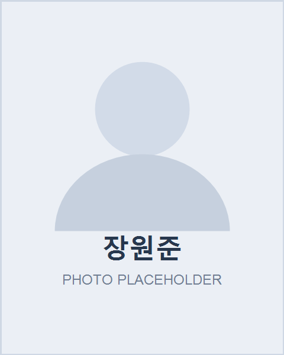

학과장 인사말
기술·정책·경영을 잇는 융합교육으로 K-방산의 미래 인재를 양성하겠습니다.
첨단 국방기술과 산업 현장의 수요를 교육에 담아, 이론과 실무를 겸비한 방위산업 전문 인재를 키웁니다.

안녕하십니까.
전북대학교 첨단방위산업학과 홈페이지 방문을 환영합니다.
우리 학과는 급변하는 안보 환경과 K-방산의 성장에 맞춰, 방위산업 분야에 필요한 전문 인재를 양성하고자 설립되었습니다.
전국 최초의 방위산업 학부과정으로서, 기술·정책·경영을 아우르는 융합 교육을 통해 학생들이 방위산업 현장에서 요구하는 실무 역량을 갖추도록 최선을 다하겠습니다.
여러분의 지속적인 관심과 성원을 부탁드립니다. 감사합니다.
전북대학교 첨단방위산업학과장 장원준 드림